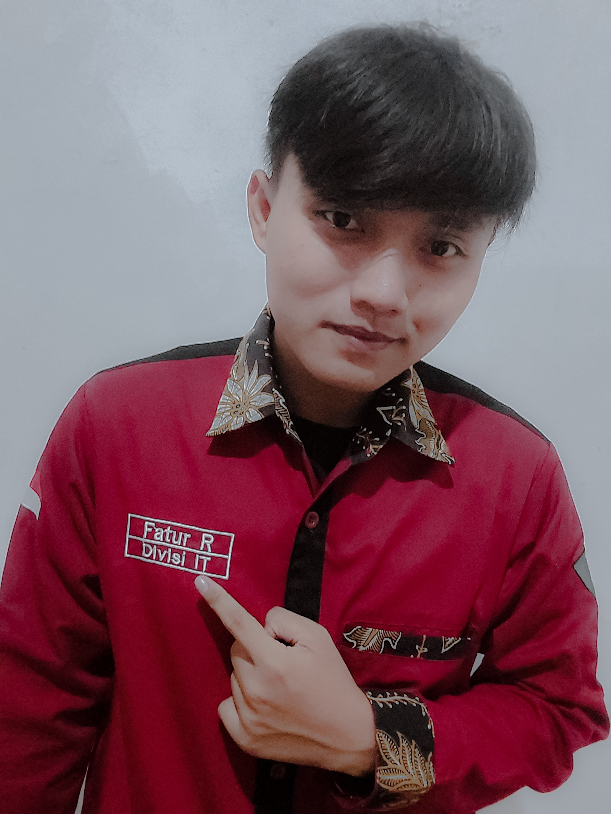

Career Summary
Web developer with expertise in front-end and back-end development. Have in-depth knowledge in web programming and responsive design. Skilled in working with various technologies and programming languages. Have good analytical skills and able to provide creative solutions to web development challenges.
Organizational Experience
Ikatan Mahasiswa Arosbaya
Vice Chairman
2024 - Present
- Conduct outreach regarding the importance of lectures in collaboration with MUSPIKA and Forkopimda
- Organizing community activities
Ikatan Mahasiswa Arosbaya
General Secretary
2023 - 2024
- Manage and organize correspondence in the organizational
Ikatan Mahasiswa Arosbaya
IT division staff
2022 - 2023
- Manage and organize social media and the Arosbaya Student Association website
UKM Triple - C
Member
2021 - Present
- Comprehensively increasing interest and talent in the IT field
- Progressively develop soft kills in the IT sector
UKM FT-ITC
Member
2021 - 2022
- Developing the talents and interests of engineering faculty students regarding internal information technology in the field of computer hardware and software
Skills & Tools
Frontend
-
React
-
JavaScript
-
Node.js
-
HTML/CSS/SASS/LESS
Backend
-
Python/Django
-
Ruby/Rails
-
PHP
-
WordPress/Shopify
Others
- DevOps
- Kotlin
- Git
- Unit Testing
- Java
- Sketch
- Balsamiq
- WordPress
Education
-
Universitas Trunojoyo MaduraS-1 Teknik Informatika2021 - Present
-
SMA Negeri 1 ArosbayaScience major2018 - 2021
Awards
-
Chairman of the Working MeetingOrganize the course of organizational work meetings
-
videography competition juryBecame a judge in a videography competition held by the Ikatan Mahasiswa Arosbaya
Language
- English (Native)
- Indonesian (Professional)
Interests
- Climbing
- Reading
- Sporting